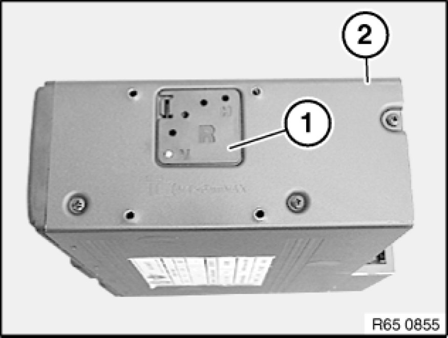
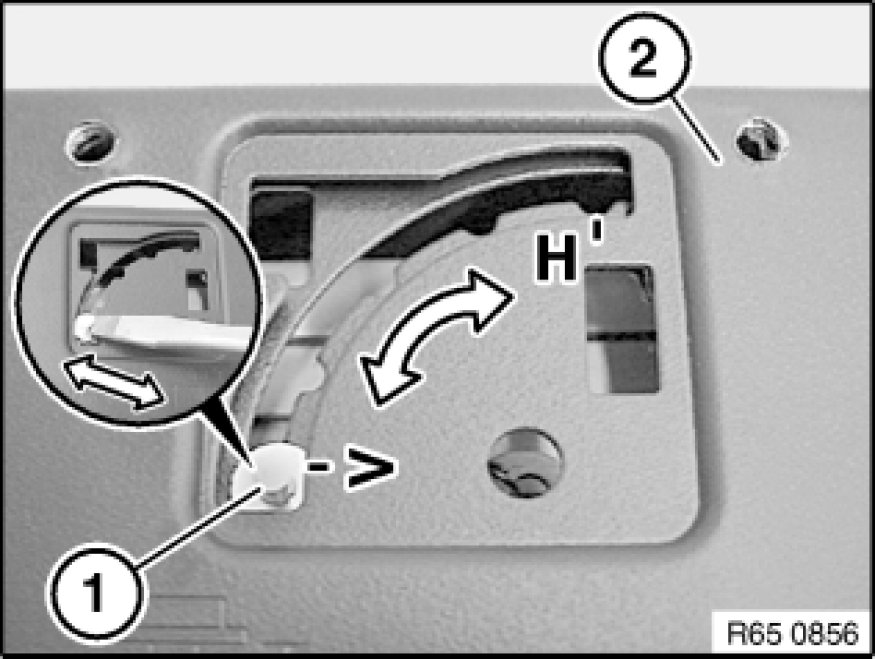

Instructions on Setting the Installation Location on the CD Changer
65 11 ... - Instructions on setting the installation location on the CD changer

Note:
To ensure trouble-free CD changer operation, ensure both suspension springs are correctly positioned (horizontal/vertical). If necessary, correct adjustment.
To avoid premature contamination of the CD changer, make sure the magazine compartment flap is permanently closed.
Note:
For purposes of clarity, the following graphics show the CD changer removed.

Note:
- Observe the following repair instructions if the magazine cannot be removed from the CD changer.
- E36:
Observe Notes on handling CD changers
- E60, E61, E63, E64:
Remove CD changer magazine
- E83:
Ejection via self-diagnosis
- E87, E90, E91:
CD changer must be sent in

Remove cover cap (1) from CD changer (2).

Arrange installation location of CD changer (2) with a suitable tool by sliding suspension spring (1) into required position.